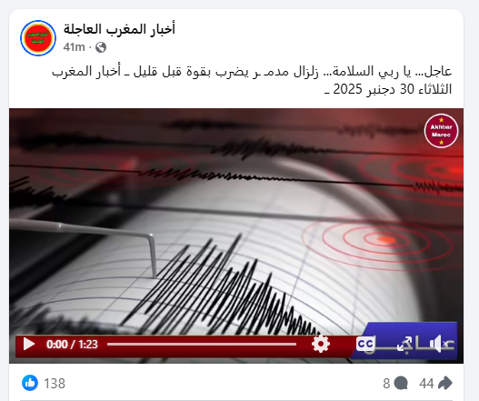

في هذه الصفحة، سنتعلم معًا كيفية التحقق من المعلومة، وكيف يمكن الحصول على معلومات موثوقة من خلال التحقق من المصادر.
المصادر الجيدة يجب أن تكون موثوقة، أي صادرة عن جهة معروفة مثل المواقع الحكومية، الجامعات، المؤسسات التعليمية، أو وسائل الإعلام المعروفة.
كما يجب أن يكون اسم الكاتب أو الجهة الناشرة معروفًا، مع إمكانية معرفة خلفيته أو تخصصه، حيث إن المصادر القادمة من جهة غير معروفة تكون غالبًا غير صادقة.
ومن المهم أن تكون المعلومة حديثة، خاصة في المواضيع العلمية، الطبية، أو التقنية، لأن العلم سريع التطور، والمعلومة التي قد تكون صحيحة في الماضي يمكن أن تتغير مصداقيتها مع صدور أبحاث جديدة.
وأخيرًا، يعتمد المصدر الجيد على دراسات، إحصائيات، أو مصادر يمكن الرجوع إليها.
يمكن التحقق من صحة المعلومات من خلال اتباع عدة خطوات أساسية تساعد على التأكد من دقتها ومصداقيتها. في البداية، يجب التأكد من مصدر المعلومة ومعرفة الجهة الناشرة أو كاتب المحتوى
بالإضافة إلى ذلك، يُنصح بمقارنة المعلومة مع مصادر موثوقة أخرى للتأكد من توافقها وعدم تعارضها مع ما هو منشور في جهات معروفة
ويجب الانتباه إلى ما إذا كانت المعلومة مدعومة بأدلة واضحة، مثل الدراسات، الإحصائيات، أو التصريحات الرسمية، حيث إن المعلومات غير المدعومة غالبًا ما تكون غير دقيقة.
شخص علي وسائل التواصل الاجتماعي ينشر معلومة مثل إلغاء او تأجيل الامتحانات الدراسية بدون اي مصدر مذكور

المصدر الأوثق للحصول علي مثل هذه المعلومة هي الصفحة الرسمية لوزارة التربية و التعليم
شخص على وسائل التواصل الاجتماعي ينشر معلومة تقول إنه يوجد علاج نهائي للسكري دون أي مصدر طبي.

حتى الآن لا يوجد علاج نهائي للسكري معتمد من قبل مؤسسات صحية عالمية أو جهات طبية مرموقة مثل منظمة الصحة العالمية.
موقع غير معروف ينشر خبرًا عن حدوث كارثة طبيعية أو حادث كبير دون الإشارة إلى أي وكالة أنباء رسمية.
الأخبار المتعلقة بالكوارث أو الحوادث يتم تأكيدها دائمًا عبر الوكالات الإخبارية الرسمية والقنوات الموثوقة.

عندما لا يتوفر مصدر عربي يمكن الاستعانة من بعض الابحاث و المصادر الاجنبية